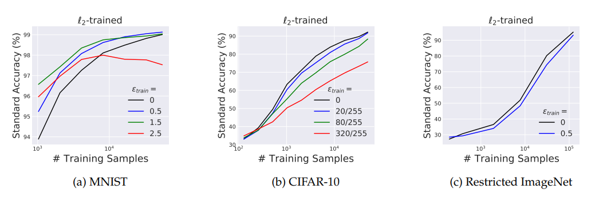
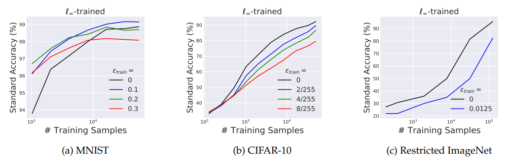
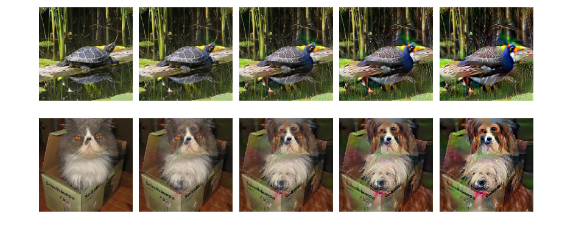

研究发现模型的正确率与鲁棒性之间存在取舍，宾且这种现象不针对特定模型，是一个具有普适的现象。这种取舍带来了意想不到的收益，模型可以提取出人类的感知以及数据特征。
Reference: * Robustness May Be at Odds with Accuracy
展现了标准正确率与鲁棒性之间的细微差别，这两者是不兼容的。而且这种排他性，不仅仅是网络中存在，在自然的设置中同样存在。
主要存在两个问题： 1. 文章通过什么方式说明，鲁棒性和正确率是不兼容的？ 2. 为什么作者认为这种不兼容性是根植于自然的？一个神经网络的现象为什么和自然有关？
鲁棒性
神经网络的训练目标，是在数据集上让似然最大化： $$\begin{align} \argmin_\theta \underset{(x, y) \sim D}{E} [\max_{\delta \in \Delta} L(x + \delta, y; \theta)] \end{align}$$
对抗攻击训练是一个minmax训练，在一定攻击强度下让模型的正确率最大：
$$\argmin_\theta E_{(x, y) \sim D} [\max_{\delta \in \Delta} L(x + \delta, y; \theta)]$$
对抗攻击训练包含生成新的训练数据集D̂，然后训练模型参数： $$\begin{align} \argmin_\theta \underset{(x, y) \sim \widehat{D} }{E} [\max_{\delta \in S} L(x + \delta, y; \theta)] \end{align}$$
通过鲁棒性训练的模型是否在任何情况下都比标准训练优秀，通过实验进行对比。
 
以上是三种不同的数据集，分别在不同的对抗攻击训练下的标准正确率。同时使用不同规模的训练大小数据集。可以看出来标准训来模型的正确率普遍好于对抗攻击模型，除了在MNIST在小数据集下表现不同。可以得到一个结论：
为什么正确率和鲁棒性看起来像是一对取舍？
理论
假设一个合成数据： $$\begin{equation} y \stackrel{u.a.r}{\sim} \{-1, +1\},\qquad x_1 = \begin{cases} +y, &\text{w.p. }p\\ -y, &\text{w.p. }1-p \end{cases},\qquad x_2,\ldots,x_{d+1} \stackrel{i.i.d}{\sim} \N(\eta y,1), \end{equation}$$
通过这样的二分类任务，进行理论分析，可以得到如下结论： > 对于任何类别，在 D数据集上至少存在 1 − δ 准确率，在 l∞攻击下鲁棒性有$\frac{p}{1-p}\delta$ 正确率，当 ϵ ≥ 2η。
可以发现，在理论分析下，对抗攻击和正确率是跷跷板的两端。
意外惊喜
鲁棒性训练会使得模型更加倾向人类对图片的理解：
可以看到在对抗训练下，模型的梯度会反映与人类十分类似的梯度信息。
同时可以将这个梯度进行平滑，可以发现可以通过对抗攻击将图片进行平滑的修改  如上图所示，模型可以将乌龟逐渐改为孔雀，猫修改为两只狗。